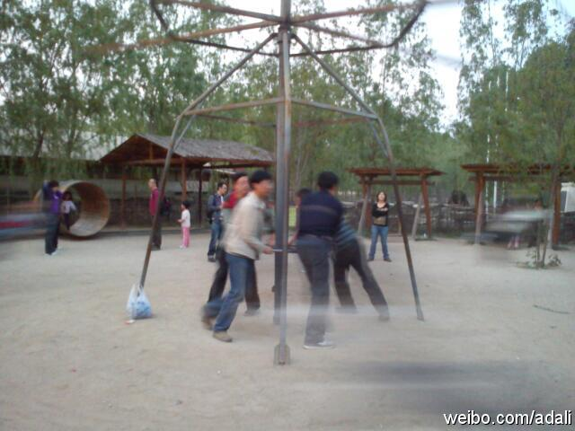

朋友讲一同事，儿子刚北邮硕士毕业，她便操心要选未来儿媳妇，好事人问她，部门里六个女孩子，哪种类型比较符合要求，她思索片刻，说一个也不符合。部门女孩有博士后，有清华毕业的，有能歌善舞的，有性格开朗的，有贤慧型的。朋友说，她那儿子见过多次，瘦小，非常普通，也就他妈当宝。

Ada李力
2011-05-01
Ada李力
2011-05-01
家庭出游基本上是大人陪着孩子玩。这个洼里乡居楼的转椅设计很有意思，基本上都是爸爸们在中间推转盘当苦力，孩子们坐飞椅上乐呵呵，妈妈们呢，在外围欣赏并拍照。
- 